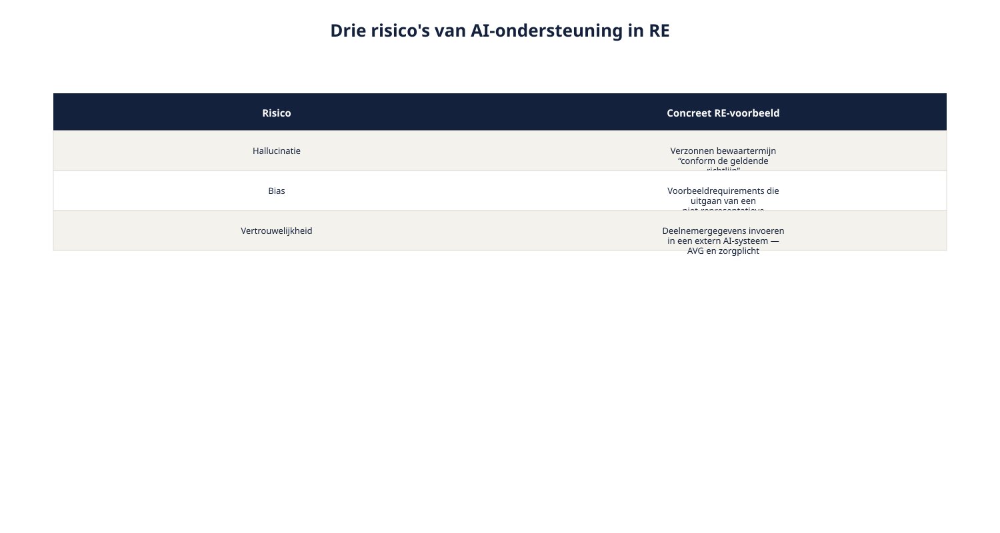
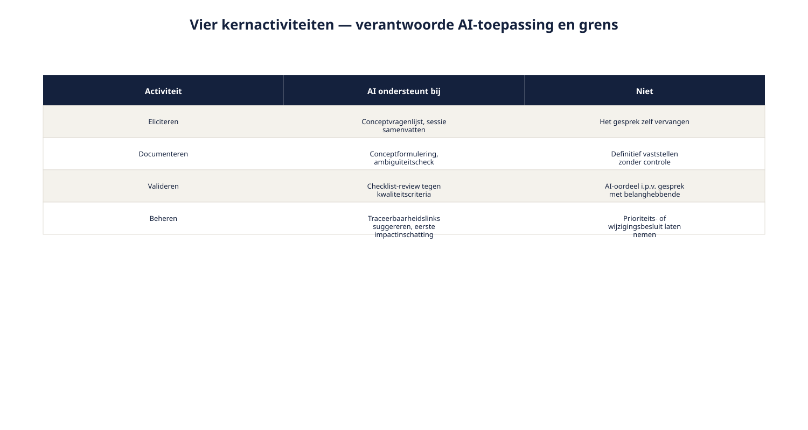

Cursus Requirements engineering · Niveau 2 (CPRE Advanced Level) · Deel 20 van 30
AI-ondersteund requirements engineering.
Dit deel staat op zichzelf: het vereist geen voorkennis van de andere delen van niveau 2 en kan los worden gevolgd. Ruben experimenteert met een AI-assistent om requirements te helpen concipiëren — met een verzonnen bewaartermijn als waarschuwend resultaat. U leert wat een taalmodel wel en niet doet, hoe u effectief prompt, welke risico's hallucinatie, bias en vertrouwelijkheid met zich meebrengen, en waarom de verantwoordelijkheid voor een requirement altijd bij de mens blijft.
8secties
±2uleestijd + werkboek
9controlevragen
3risico's van AI-ondersteuning
Positionering. Deze cursus is een voorbereiding op de CPRE Advanced Level-certificering van IREB, waaronder de micro-credential AI4RE, en is uitdrukkelijk geen vervanging van het officiële syllabus- en examenmateriaal van IREB, te raadplegen via ireb.org.
Niveau 2: 11 RE-strategie kiezen → 12 Stakeholderanalyse gevorderd → 13 Techniekkeuze programmaniveau → 14 Consolidatie en conflicthantering → 15 Modeling: context/doel/gedrag → 16 Modeling: data en beslisregels → 17 Attributen, prioritering en baselines → 18 Traceerbaarheid en impactanalyse → 19 Wijzigingsbeheer, meten en rapporteren → 20 AI4RE (hier) → 21 RE@Agile → 22 Examentraining + capstone
01
Waar dit deel over gaat
⏱ 8 min
Dit deel staat op zichzelf: het vereist geen voorkennis van de andere delen van niveau 2 en kan los worden gevolgd. Waar het naar de Wegwijzer-casus verwijst, dient dat als illustratie, niet als vereiste context.
Aan het eind van dit deel kunt u:
in eigen woorden uitleggen wat een taalmodel wel en niet doet in de context van requirements engineering;
prompt engineering toepassen op concrete RE-taken;
de belangrijkste risico's van AI-ondersteuning in RE benoemen: hallucinatie, bias, vertrouwelijkheid;
uitleggen waarom verantwoordelijkheid voor een requirement bij de mens blijft, ook als AI het concept genereerde;
per RE-activiteit (eliciteren, documenteren, valideren, beheren) een passende, verantwoorde vorm van AI-ondersteuning benoemen.
02
De hallucinatie die bijna meeging
⏱ 10 min
Ruben experimenteert met een AI-assistent om, op basis van zijn interviewnotities, een eerste concept van requirements te laten genereren. Het resultaat oogt professioneel: nette zinnen, een logische structuur, zelfs een paar scherpe formuleringen die hij zelf niet had bedacht. Bij het doorlezen valt hem één requirement op die hij zich niet herinnert te hebben besproken: een specifieke bewaartermijn, met een concreet aantal jaren erbij, "conform de geldende richtlijn".
"Vijf jaar bewaartermijn conform de geldende richtlijn — welke richtlijn is dat precies?"
"Geen idee. Dat heb ik niet aangeleverd. Ik heb geen idee waar dat getal vandaan komt."
Er blijkt geen geldende richtlijn te zijn die dit aantal jaren voorschrijft — niet in zijn notities, niet in enig document dat hij heeft aangeleverd. De AI heeft het aantal verzonnen, in een vorm die overtuigend genoeg oogde om bijna zonder controle te worden overgenomen. Dit is geen incident dat AI-ondersteuning diskwalificeert. Het is precies waarom dit deel bestaat: AI kan requirements engineering aanzienlijk versnellen, en het brengt een specifiek risico met zich mee dat u moet herkennen om er verantwoord mee te werken.
03
Wat een taalmodel wel en niet doet
⏱ 14 min
Een taalmodel (large language model, LLM) is getraind om, op basis van patronen in enorme hoeveelheden tekst, waarschijnlijke vervolgtekst te genereren. Dat klinkt technisch, maar de praktische consequentie is eenvoudig te onthouden.
Wat het wel doet: patronen herkennen en reproduceren — zinsbouw, structuur, veelvoorkomende manieren om iets te formuleren, samenvattingen van tekst die u zelf aanlevert.
Wat het niet doet: weten of iets waar is, toegang hebben tot de werkelijke situatie tenzij die expliciet is aangeleverd, of een gevoel van verantwoordelijkheid voor de consequenties van een fout.
Een taalmodel dat een bewaartermijn "conform de geldende richtlijn" noemt, doet dat omdat zinnen met die structuur vaak in trainingsdata voorkwamen — niet omdat het de daadwerkelijke richtlijn heeft geraadpleegd. Dit is geen gebrek dat met een volgende versie automatisch verdwijnt; het is een fundamentele eigenschap van hoe deze modellen werken.
Figuur 20-1 — wat een taalmodel wel en niet doet, naast elkaar, met het bewaartermijn-voorbeeld
Controlevragen
Uit Werkboek deel 20, Opdracht 20.1 — Wat doet de AI hier wel en niet?
1Een AI genereert een requirement met de zin "conform artikel 12 van de geldende AVG-richtlijn", terwijl er geen artikel 12 in de aangeleverde tekst werd genoemd. Wat deed de AI wel, wat kon zij niet hebben gedaan?Toon antwoord
Wel gedaan: een plausibele juridische formulering gegenereerd. Niet gedaan (kon niet weten): de daadwerkelijke inhoud van "artikel 12" verzonnen — een hallucinatie.
2Een AI vat een lang interviewverslag correct samen in vijf hoofdpunten die allemaal daadwerkelijk in het verslag stonden. Wel of niet verantwoord gebruik?Toon antwoord
Dit is een correct, verantwoord gebruik: patronen en hoofdpunten uit de aangeleverde tekst zijn correct herkend en samengevat, zonder iets toe te voegen dat niet in de input zat. Niet elke AI-toepassing is riskant — het onderscheid zit in of de AI iets toevoegt dat niet in de aangeleverde input zat.
04
Prompt engineering voor RE-taken
⏱ 16 min
Prompt engineering is het doelbewust formuleren van de instructie aan een taalmodel om een bruikbaarder, betrouwbaarder resultaat te krijgen. Vier technieken die direct toepasbaar zijn op RE-werk.
Geef duidelijke context mee. Een AI die alleen "schrijf een requirement over een risicoprofielkeuze" krijgt, vult zelf in wat er ontbreekt — vaak plausibel klinkend, maar niet gebaseerd op uw daadwerkelijke situatie. Voeg de relevante notities, de belanghebbende en het doel expliciet toe.
Vraag expliciet om bronvermelding en onzekerheid. Een instructie als "geef aan welke onderdelen van je antwoord uit de aangeleverde tekst komen, en welke je zelf hebt aangevuld" dwingt een onderscheid af dat anders onzichtbaar blijft — en had het bewaartermijn-incident zichtbaar gemaakt.
Vraag om alternatieven, niet om één antwoord. In lijn met het ijsbergmodel: een AI die drie mogelijke formuleringen van een requirement genereert, met de verschillen benoemd, is bruikbaarder dan een AI die er één met schijnzekerheid presenteert.
Verfijn iteratief. Begin met een grove opzet, beoordeel kritisch, en stuur bij met een preciezere instructie — net zoals u bij elicitatie niet verwacht in één gesprek de volledige behoefte te achterhalen.
Figuur 20-2 — een voorbeeldprompt voor het detecteren van ambiguïteit in een requirementstekst, opgebouwd volgens de vier technieken
Voorbeeldtoepassing — ambiguïteit detecteren
In plaats van een AI te vragen "verbeter deze requirement", vraagt u: "identificeer in de volgende tekst mogelijke lexicale, syntactische, verwijzende of vage ambiguïteit, zonder zelf de tekst te herschrijven — geef per gevonden punt aan welke soort ambiguïteit het betreft en welke alternatieve lezingen mogelijk zijn." Dit levert een controleerbare analyse op, in plaats van een output waarin de AI zelf al (mogelijk onterecht) een keuze heeft gemaakt.
05
Risico's en verantwoordelijkheid
⏱ 18 min
Hallucinatie. Een AI kan een bron, een detail of een "feit" verzinnen dat overtuigend klinkt maar niet bestaat — precies wat er bij het bewaartermijn-incident gebeurde. Een AI-gegenereerde requirement kan een oplossing verpakken als eis, of een schijnbaar precieze formulering geven die bij nader inzien nergens op gebaseerd is — zonder dat dit meteen opvalt, juist omdat de tekst zo vloeiend oogt.
Bias. Patronen uit de trainingsdata van een taalmodel weerspiegelen de teksten waarop het is getraind — die zijn niet neutraal en passen niet automatisch bij de specifieke context van uw organisatie of doelgroep. Een AI die "gebruiksvriendelijke" voorbeeldrequirements genereert, kan onbewust uitgaan van een gebruiker die niet representatief is voor de werkelijke doelgroep van Wegwijzer.
Vertrouwelijkheid. Gevoelige informatie — deelnemergegevens, interne beleidsstukken, concrete casuïstiek met herleidbare details — mag niet zomaar in een extern AI-systeem worden ingevoerd. Dit raakt direct aan de AVG en, bij Wegwijzer specifiek, aan zorgplicht: een AI-tool die buiten de organisatie draait, is een nieuwe partij die toegang krijgt tot gevoelige gegevens, met alle vragen over grondslag en beveiliging die daarbij horen.

Figuur 20-3 — drie risico's — hallucinatie, bias, vertrouwelijkheid — elk met een concreet RE-voorbeeld
De kern: de mens blijft verantwoordelijk
Dit is een directe toepassing van de rolgrens uit niveau 1: de requirements engineer levert feiten, opties en consequenties; het besluit ligt bij anderen. Een AI die een conceptrequirement genereert, verandert deze rolgrens niet — de AI levert een concept of een optie, nooit een besluit. Wie een AI-gegenereerde requirement zonder controle overneemt, laat de AI feitelijk het besluit nemen, ook al voelt dat niet zo. De verantwoordelijkheid voor een requirement verschuift nooit naar de AI, ongeacht wie of wat de tekst heeft opgesteld.
Controlevragen
Uit Werkboek deel 20, Opdracht 20.3 — Risico herkennen
3Een medewerker plakt een deel van een vertrouwelijk interviewverslag met herleidbare deelnemergegevens in een openbare AI-chatbot om het te laten samenvatten. Welk risico?Toon antwoord
Vertrouwelijkheid.
4Een AI genereert voorbeeldpersona's voor gebruikerstests die allemaal hoogopgeleid en digitaal vaardig zijn, terwijl de daadwerkelijke doelgroep veel diverser is. Welk risico?Toon antwoord
Bias.
5Een AI noemt een exact percentage ("73% van de deelnemers prefereert...") zonder dat dit percentage ergens uit brondata blijkt. Welk risico?Toon antwoord
Hallucinatie.
06
Use cases per RE-activiteit, en de grens
⏱ 16 min
Terug naar de vier kernactiviteiten uit niveau 1: eliciteren, documenteren, valideren, beheren. Voor elk een verantwoorde vorm van AI-ondersteuning.
Eliciteren. AI als voorbereidingshulp: een conceptvragenlijst voor een interview genereren op basis van wat u al weet, of een lange sessie samenvatten zodat u sneller de hoofdpunten terugvindt. Niet: het gesprek zelf vervangen — het luisteren, doorvragen en de menselijke aandacht blijven onvervangbaar.
Documenteren. Conceptformuleringen genereren volgens het Ductus-sjabloon, of een eerste ambiguïteitscontrole op een tekst uitvoeren. Niet: een requirement definitief vaststellen zonder menselijke controle op inhoud en herkomst.
Valideren. Een eerste, checklist-achtige review van een requirement tegen bekende kwaliteitscriteria. Niet: een AI-oordeel accepteren als vervanging van een echt gesprek met de belanghebbende — valideren toetst tegen de werkelijke behoefte, iets wat een AI niet kan waarnemen.
Beheren. Traceerbaarheidslinks suggereren op basis van tekstuele overeenkomsten, of een eerste inschatting van wijzigingsimpact genereren als startpunt voor de impactanalyse — nooit als het definitieve antwoord. Niet: een prioriteitsbesluit of een wijzigingsbesluit laten nemen door een AI — dat blijft bij de mens die daarvoor het mandaat heeft.

Figuur 20-4 — de vier kernactiviteiten met, per activiteit, een verantwoorde AI-toepassing en een expliciete grens
RE-activiteit
AI ondersteunt bij
De mens beslist over
Eliciteren
Voorbereiding, samenvatten
Het gesprek zelf, de interpretatie
Documenteren
Conceptformulering, ambiguïteitscheck
De uiteindelijke, vastgestelde tekst
Valideren
Eerste checklist-review
Of de requirement de echte behoefte dekt
Beheren
Suggesties voor links, eerste impactinschatting
Prioriteit, wijzigingsbesluit
De rode draad: AI levert snelheid en een eerste concept; de mens levert oordeel en verantwoordelijkheid. Dit onderscheid verandert niet naarmate AI-modellen beter worden — een preciezere AI blijft een AI zonder verantwoordelijkheidsgevoel, en de rolgrens uit niveau 1 blijft daarom net zo relevant, ongeacht de kwaliteit van het gereedschap.
07
Certificeringsaansluiting: AI4RE
⏱ 16 min
De micro-credential AI4RE van IREB toetst kennis van AI-basisbegrippen, LLM's, prompt engineering, risico's en verantwoordelijkheid, en concrete toepassingen in requirements engineering — precies de onderwerpen van dit deel. Het examen bestaat uit een beperkt aantal meerkeuzevragen met een relatief hoge score-eis, en kent geen formele toelatingseis.
Controleer bij het inplannen van een echt examen altijd de actuele voorwaarden en syllabusversie bij de certificeerder — deze kunnen wijzigen.
Dit deel bereidt inhoudelijk voor op die micro-credential, maar is — net als de rest van deze cursus — geen vervanging van het officiële oefenmateriaal. Onderstaande vragen zijn in AI4RE-examenstijl, zoals ze ook in het werkboek staan.
Controlevragen
Uit Werkboek deel 20, Opdracht 20.5 — Voorbeeldexamenvragen AI4RE-stijl
6Wat is de belangrijkste reden waarom een taalmodel een niet-bestaande bron kan noemen? A) Het model probeert bewust te misleiden B) Het model reproduceert plausibele taalpatronen zonder toegang tot de waarheid te hebben C) Het model heeft een verouderde kennisbank D) Het model kopieert altijd letterlijk uit zijn trainingsdataToon antwoord
Correct antwoord: B. Kernprincipe: een taalmodel reproduceert patronen, het heeft geen toegang tot waarheid.
7Welke prompttechniek vermindert het risico op een onopgemerkte hallucinatie het meest direct? A) Vragen om een langer antwoord B) Vragen om bronvermelding en expliciete onzekerheid C) Het antwoord in een opsomming laten zetten D) De vraag in het Engels stellenToon antwoord
Correct antwoord: B. Een directe toepassing van de prompt-engineeringtechnieken uit paragraaf 4.
8Waar/onwaar: zodra een AI een requirement heeft gegenereerd en een mens deze ongewijzigd overneemt, ligt de verantwoordelijkheid voor eventuele fouten bij de AI.Toon antwoord
Correct antwoord: Onwaar. De verantwoordelijkheid blijft bij de mens die de tekst overneemt, ongeacht de bron — een klassieke omkeer-valkuil.
9Welke RE-activiteit leent zich het minst voor volledige AI-vervanging? A) Het genereren van een eerste conceptformulering B) Het samenvatten van een lang interviewverslag C) Het valideren of een requirement de werkelijke behoefte van een belanghebbende dekt D) Het suggereren van traceerbaarheidslinks op basis van tekstuele overeenkomstToon antwoord
Correct antwoord: C. Valideren tegen de werkelijke behoefte vereist menselijk oordeel en contact met de belanghebbende; de andere drie opties zijn juist voorbeelden van verantwoorde AI-ondersteuning.
08
Terug naar de casus
⏱ 8 min
Het bewaartermijn-incident waarmee dit deel opende, is een waarschuwing zonder ernstige gevolgen gebleven — precies omdat Ruben las voordat hij overnam. Bij Wegwijzer, waar zorgplicht een aantoonbare eis is en niet elke fout achteraf te herstellen valt, is diezelfde discipline geen keuze maar een voorwaarde: AI mag het werk versnellen, nooit de controle vervangen.
Dit deel is zelfstandig leesbaar en kan op elk moment in de cursus worden gevolgd. Voor wie niveau 2 in volgorde doorloopt: deel 21 opent de RE@Agile-module en daarmee spanningsveld 4, het laatste van Wegwijzer — twee kloksnelheden die met elkaar moeten samenwerken.
Verder met deel 21
U kent nu de kansen en risico's van AI-ondersteuning in requirements engineering, en de rolgrens die daarbij onveranderd blijft. Deel 21 opent de RE@Agile-module: hoe een sprintend ontwikkelteam en een formeel besluitvormend gremium — de sociale partners — met elkaar samenwerken, zonder dat het ene het andere ondermijnt.